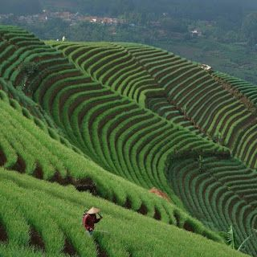

Hot News
Terasering Panyaweuyan

Terasering Panyaweuyan adalah area pertanian yang dibangun di lereng perbukitan dengan sistem bertingkat. Berbeda dengan terasering di Ubud yang didominasi tanaman padi, di sini pengunjung akan disuguhkan hamparan sayuran hijau seperti bawang merah, daun bawang, dan berbagai tanaman hortikultura lainnya. Keunikan ini membuat Panyaweuyan Majalengka memiliki daya tarik visual yang khas.p>